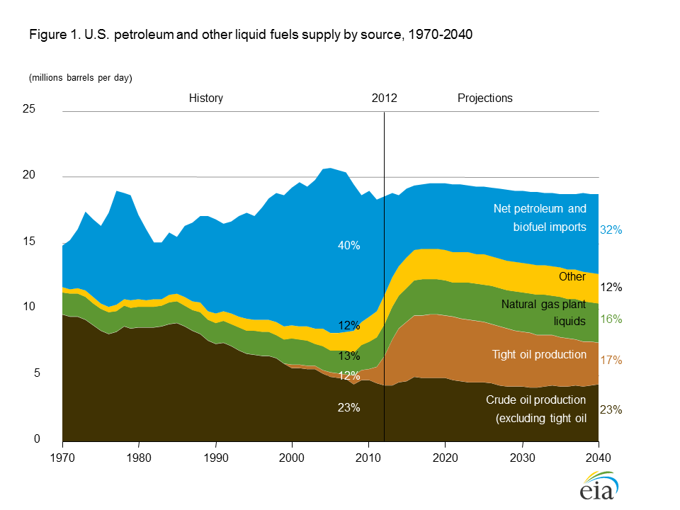
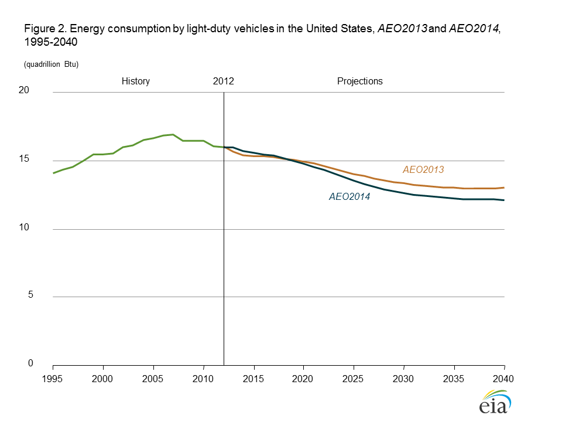

{kind=link}
{kind=link}
AEO2014 Early Release Overview
Release Date: December 16, 2013 | Full Report Release Date: Early Spring 2014 | correction | Report Number: DOE/EIA-0383ER(2014)
Executive Summary
Projections in the Annual Energy Outlook 2014 (AEO2014) Reference case focus on the factors that shape U.S. energy markets through 2040, under the assumption that current laws and regulations remain generally unchanged throughout the projection period. The early release provides a basis for the examination and discussion of energy market trends and serves as a starting point for analysis of potential changes in U.S. energy policies, rules, or regulations or possible technology breakthroughs. Readers are encouraged to review the full range of cases that will be presented when the complete AEO2014 is released in 2014, exploring key uncertainties in the Reference case.
Major highlights of the AEO2014 Reference case include:
Growing domestic production of natural gas and crude oil continues to reshape the U.S. energy economy, with crude oil production approaching the historical high achieved in 1970 of 9.6 million barrels per day

figure dataOngoing improvements in advanced technologies for crude oil and natural gas production continue to lift domestic supply and reshape the U.S. energy economy. Domestic production of crude oil (including lease condensate) increases sharply in the AEO2014 Reference case, with annual growth averaging 0.8 million barrels per day (MMbbl/d) through 2016, when it totals 9.5 MMbbl/d (Figure 1). While domestic crude oil production is expected to level off and then slowly decline after 2020 in the Reference case, natural gas production grows steadily, with a 56% increase between 2012 and 2040, when production reaches 37.6 trillion cubic feet (Tcf).The full AEO2014 will include cases that represent alternative oil and natural gas resource and technology assumptions.
{kind=link}
Low natural gas prices boost natural gas-intensive industries
Industrial shipments grow at a 3.0% annual rate over the first 10 years of the projection and then slow to 1.6% annual growth for the rest of the projection. Bulk chemicals and metals-based durables account for much of the increased growth in industrial shipments in AEO2014. Industrial shipments of bulk chemicals, which benefit from an increased supply of natural gas liquids, grow by 3.4% per year from 2012 to 2025 in AEO2014, as compared with 1.9% in the Annual Energy Outlook 2013 (AEO2013) Reference case. The projection assumes growing competition from abroad that flattens output growth in energy-intensive industries after 2030.
The higher level of industrial shipments leads to more natural gas consumption (including lease and plant fuel) in the U.S. industrial sector, increasing from 8.7 quadrillion British thermal units (Btu) in 2012 to 10.6 quadrillion Btu in 2025 in AEO2014, compared to 9.8 quadrillion Btu in 2025 in AEO2013.
Light-duty vehicle energy use declines sharply, reflecting slow growth in vehicle miles traveled and accelerated improvement in vehicle efficiency

figure dataAEO2014 includes a new, detailed demographic profile of driving behavior by age and gender as well as new lower population growth rates based on updated U.S. Census Bureau projections. As a result, annual increases in vehicle miles traveled (VMT) for light-duty vehicles (LDVs) in the AEO2014 Reference case average 0.9% from 2012 to 2040, compared to 1.2% per year in AEO2013 over the same period. The rising fuel economy of LDVs more than offsets the modest growth in VMT, and LDV energy consumption declines in the AEO2014 Reference case from 16.0 quadrillion Btu in 2012 to 12.1 quadrillion Btu in 2040, as compared with the AEO2013 total of 13.0 quadrillion Btu in 2040 (Figure 2). The full AEO2014 will include an Issues in Focus discussion of VMT projections that addresses the implications of alternative VMT scenarios.
{kind=link}
Natural gas overtakes coal to provide the largest share of U.S. electric power generation
{kind=link}
Projected low prices for natural gas make it a very attractive fuel for new generating capacity. In some areas, natural gas-fired generation replaces generation formerly supplied by coal and nuclear plants. In 2040, natural gas accounts for 35% of total electricity generation, while coal accounts for 32% (Figure 3). Generation from renewable fuels, unlike coal and nuclear power, is higher in the AEO2014 Reference case than in AEO2013. Electric power generation with renewables is bolstered by legislation enacted at the beginning of 2013 extending tax credits for various renewable technologies; which was passed after the AEO2013 Reference case had been completed, but was considered in an alternative case in AEO2013. The full AEO2014 will include a variety of cases addressing the implications of alternative market conditions and policies for the electricity generation mix.
Higher natural gas production also supports increases in exports of both pipeline and liquefied natural gas
In addition to increases in domestic consumption in the industrial and electric power sectors, U.S. exports of natural gas also increase in the AEO2014 Reference case (Figure 4). U.S. exports of liquefied natural gas (LNG) increase to 3.5 Tcf in 2029 and remain at that level through 2040. Pipeline exports of U.S. natural gas to Mexico grow by 6% per year, from 0.6 Tcf in 2012 to 3.1 Tcf in 2040, and pipeline exports to Canada grow by 1.2% per year, from 1.0 Tcf in 2012 to 1.4 Tcf in 2040. Over the same period, U.S. pipeline imports from Canada fall by 30%, from 3.0 Tcf in 2012 to 2.1 Tcf in 2040, as more U.S. demand is met by domestic production. Projected exports are sensitive to assumptions regarding conditions in U.S. and global natural gas markets. The full AEO2014 will include cases that illustrate the sensitivity of projected natural gas exports to alternative resource, economic, and price scenarios.
{kind=link}
With strong growth in domestic crude oil and natural gas production, U.S. use of imported fuels falls sharply
In the AEO2014 Reference case, U.S. domestic energy production increases from 79.1 quadrillion Btu in 2012 to 102.1 quadrillion Btu in 2040, and net use of imported energy sources, which was 30% in 2005, falls from 16% of total consumption in 2012 to 4% in 2040. In the AEO2013 Reference case, domestic energy production reached a total of 98.5 quadrillion Btu, and energy imports is projected to decline as a percentage of consumption to 9% in 2040. The larger increase in domestic energy production in AEO2014 is primarily a result of higher projections of production of natural gas and biomass/other renewables. Crude oil production (including lease condensate) increases from 13.9 quadrillion Btu in 2012 to a peak of 20.5 quadrillion Btu in 2019 before dropping to 16.0 quadrillion Btu in 2040.
With domestic crude oil production rising to 9.5 MMbbl/d in 2016, the import share of U.S. petroleum and other liquids supply falls to about 25%. Domestic production begins to decline after 2019, and the import share of total petroleum and other liquids supply grows to 32% in 2040, still lower than the 2040 level of 37% in the AEO2013 Reference case. The alternative cases in the full AEO2014 will illustrate how different assumptions about resources, markets, and policies can dramatically impact projections of import dependence.
Improved efficiency of energy use in the residential and transportation sectors and a shift away from carbon-intensive fuels for electricity generation keep U.S. energy-related carbon dioxide emissions below their 2005 level through 2040
In the AEO2014 Reference case, total U.S. energy-related emissions of carbon dioxide (CO2) remain below the 2005 level in every year through 2040. Projected emissions in 2020 and 2040 are, respectively, about 9% and 7% below the 2005 level.
In AEO2014, CO2 emissions associated with U.S. industrial activity (including CO2 emissions associated with the generation of electricity used in the industrial sector) begin to surpass emissions from the transportation sector in the middle of the next decade for the first time since the late 1990s. In the transportation sector, as a result of new fuel economy standards, biofuel mandates, and shifts in consumer behavior, emissions from transportation sector use of petroleum and other liquids generally decline or remain stable from 2012 through 2040. Emissions from energy use in the commercial sector increase more rapidly than in the residential sector, and in 2040 emissions from these two sectors are about equal. In the electric power sector, CO2 emissions from coal combustion decline after 2029 as more power plants are fueled by lower-carbon fuels, including natural gas and renewables. However, the lower level of CO2 emissions in the electric power sector because of the reduced role for coal is partially offset by less projected generation from nuclear power. Generation from nuclear power in AEO2014 is 10% below levels in AEO2013 in 2040 as a result of increased nuclear plant retirements.
Projected growth in real gross domestic product is slightly slower than in AEO2013, but projected per capita GDP and disposable income are higher than in AEO2013 because of a reduced projection for U.S. population growth
Annual growth of real gross domestic product (GDP) from 2012 to 2040 averages 2.4% in the AEO2014 Reference case, slightly below the AEO2013 Reference case growth rate over the same period. However, industrial output growth is higher in AEO2014, averaging 2.1% per year from 2012 to 2040. Industries that supply equipment for increased natural gas production, as well as industries benefitting from lower natural gas prices, account for much of the higher growth in manufacturing. On a per capita basis, projected annual growth rates for real GDP and disposable income in AEO2014, both averaging 1.7% per year, are above the comparable rates in AEO2013, reflecting lower projected population growth rate estimates (0.7% in AEO2014 compared to 0.9% in AEO2013) for the 2012-40 period provided by the U.S. Census Bureau.
Sections
- Executive summary
- Introduction
- Economic growth
- Energy prices
- Delivered energy consumption
by sector - Energy consumption
by primary fuel - Energy intensity
- Energy production
and imports - Electricity generation
- Energy-related CO2 emissions
Data Tables
Reference Case Summary & Detailed Tables
Interactive Table Viewer ›
Provides custom data views of the AEO2014 Reference case and as compared to the AEO2013 Reference case. All available cases can be charted and the data for them downloaded.